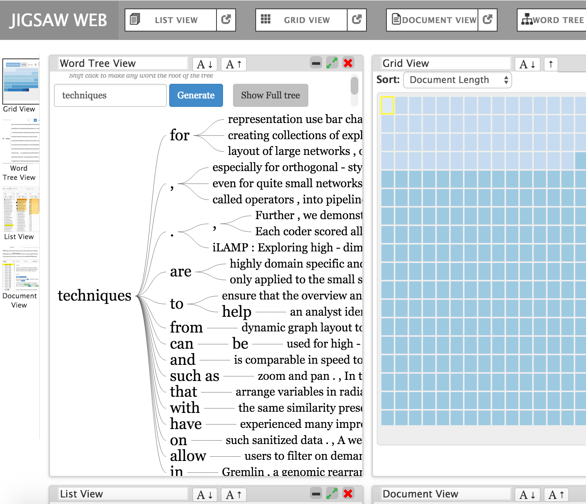

Investigative analysts and researchers acquire clues and connect small bits of evidence to uncover larger plans, stories, or narratives, and to simply gain a better understanding of the information. Often, the individual bits of evidence are short text documents or spreadsheets, and analysts must examine large collections of such documents in order to "put the pieces together" and formulate a well-supported hypothesis about actions that may occur in the future. As the number of documents to examine rises, it becomes more and more challenging for analysts to understand the data and make judgments about it.
I am working on creating the web version of the software Jigsaw which will help analysts and researchers better explore, analyze, and make sense of such document collections more conviently and efficiently . Our specific objective is to help analysts reach more timely and accurate understandings of the larger stories and important concepts embedded throughout textual reports. Jigsaw provides a collection of visualizations that each portray different aspects of the documents. We particularly focus on presenting the identifiable important entities (people, places, organizations, etc.) and their direct or indirect connections. Textual processing extracts the important entities from the documents and then the visualizations help an analyst to explore the relationships and connections among the entities. The system includes a variety of visualizations such as list, graph, temproal and connection-based views, as well as views of individual document's text and the document collection as a whole. Jigsaw essentially acts as a visual index onto the document collection, helping analysts identify particular documents to read and examine next.
The system will be made available to public soon
© 2016 All Rights Reserved.